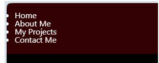
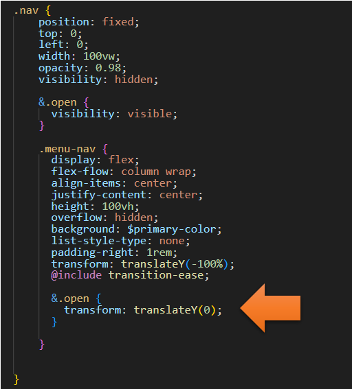

~8 The Navigation Sass Code ~
8/26/2024
The Java Script for the Nav Menu
Turn on Sass
In Visual Studio
Remember to turn on your Watch Sass
Inside the main.scss
We will be making changes to our navigation, so the original code that we wrote in the main.scss will no longer be needed. You can just comment it out for now.
Right now the menu, is looking very good with the styles intact.
Now when you comment this code out…
Your menu will now appear ugly and like this, on your webpage, when the code is commented out. Don't worry, we will be redoing these styles, for the navigation, in the next sections of this tutorial.

Inside of the _menu.scss file
The .nav Class
You want to create a new nav Class. Inside of the _menu.scss file, go to the very last closing curly brace on the page, you will be creating this new class underneath that closing brace.
In this next code, you will see we will be making the vw to be 100vw, which makes it 100% of the viewport width. The opacity set to 0.98 will only allow us to see just a hint of our background image, on the screen. We set the translateY to be a -100 %. This means that our menu has been moved upward and off the screen.
.nav {
position: fixed;
top: 0;
left: 0;
width: 100vw;
opacity: 0.98;
visibility: hidden;
&.open {
visibility: visible;
}
.menu-nav {
display: flex;
flex-flow: column wrap;
align-items: center;
justify-content: center;
height: 100vh;
overflow: hidden;
background: $primary-color;
list-style-type: none;
padding-right: 1rem;
transform: translateY(-100%);
@include transition-ease;
}
}
*Remember when you test it, you must be on the index.html page, or you will only get gobbety-gook on the screen.
Yes, you will not see the menu, because it is starting out at a position, which is moved upward and off the screen.
Now to write the code to move the menu down ward.
&.open {
transform: translateY(0);
}
*Warning, now do not expect this code to do anything yet. We need to write the Java Script first in the Java Script file.

The Java Script for the Nav Menu
Go to your main.js file, which is inside of your dist folder.
Write another Two constants at top
const nav = document.querySelector('.nav');
const menuNav = document.querySelector('.menu-nav');
Changes to the function toggleMenu
When we start to write our code, we want to put that code here:
nav.classList.add('open');
menuNav.classList.add('open');
Now copy those two lines of code, because we need to do the same thing after the else clause when we remove the open class from the menu.
You will need to change the word add to remove in both lines.
nav.classList.remove('open');
menuNav.classList.remove('open');
const menuBtn = document.querySelector('.menu-btn');
const hamburger = document.querySelector('.menu-btn__burger');
const nav = document.querySelector('.nav');
const menuNav = document.querySelector('.menu-nav');
let showMenu = false;
menuBtn.addEventListener('click', toggleMenu);
function toggleMenu() {
if(!showMenu) {
hamburger.classList.add('open');
nav.classList.add('open');
menuNav.classList.add('open');
showMenu = true;
} else {
hamburger.classList.remove('open');
nav.classList.remove('open');
menuNav.classList.remove('open');
showMenu = false;
}
}

Testing the Page
Make sure you go back to the index.html page to test the code out.
This is what the page looks like when you first arrive.
Click on the Hamburger button, in the far upper right-hand corner of the webpage.
Now your menu part comes down and covers the page and the page looks like this, with just a hint of the main home page showing below
Click on that X again, in the far upper right-hand corner, and it shows the home page again